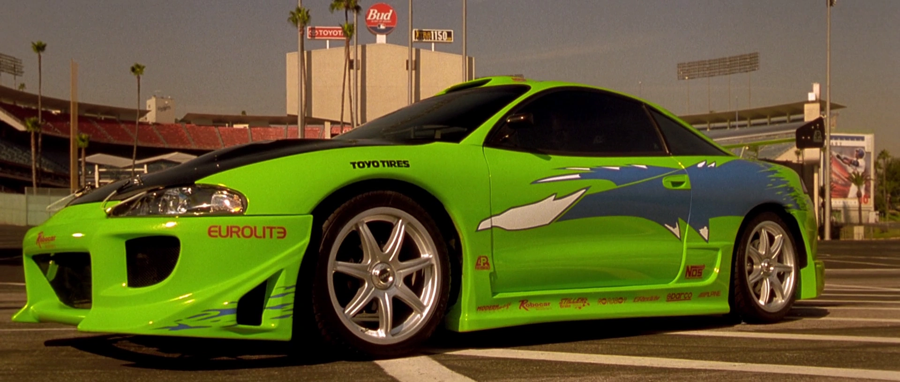
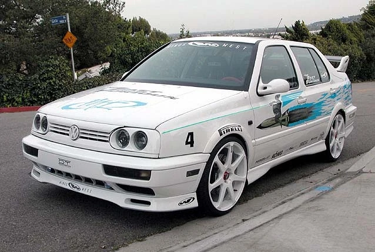
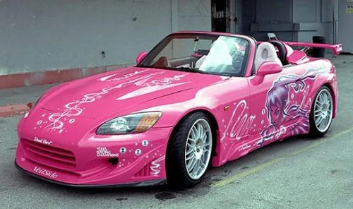
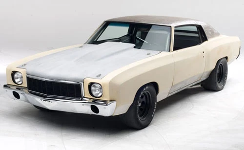
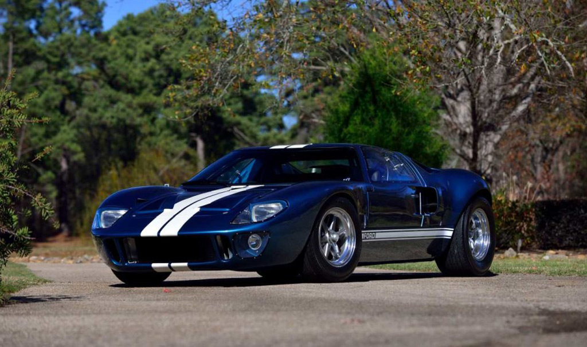
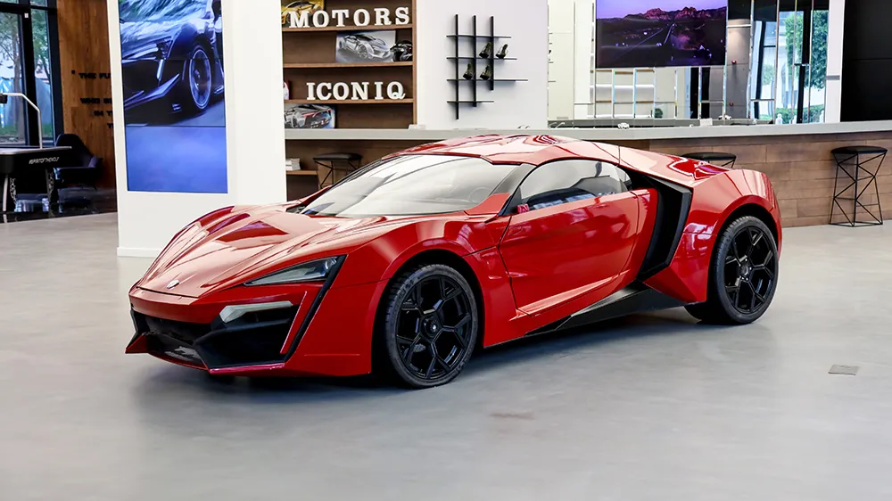
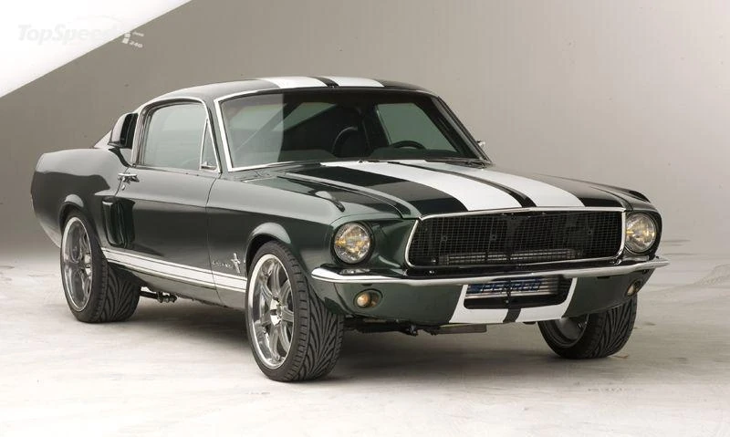

Dodge Charger R/T
Dom's legendary muscle car, pure American muscle and power.
V8 • Classic
Dom's legendary muscle car, pure American muscle and power.

Brian's sleek import racer, the JDM legend that stole the spotlight.
AWD • JDM
The orange beauty that beat Dom's Charger in the first film.

Brian's neon-green street racer from the very first film.

Jesse's white Jetta — iconic for its tragic race against Johnny Tran.

Suki's hot pink convertible with custom graphics, pure style.
VTEC • Style
Sean's street-racing beast in Tokyo Drift's opening sequence.

The blue classic stolen in Fast Five — part of the Rio heist plan.
V8 • Classic
The $3.4M hypercar that Dom & Brian launched between skyscrapers.

Featured in *Tokyo Drift*, blending American muscle with JDM culture.